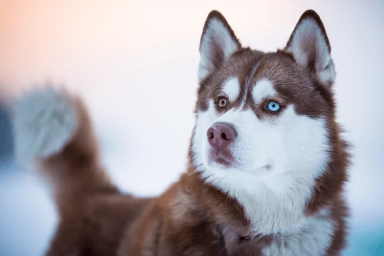
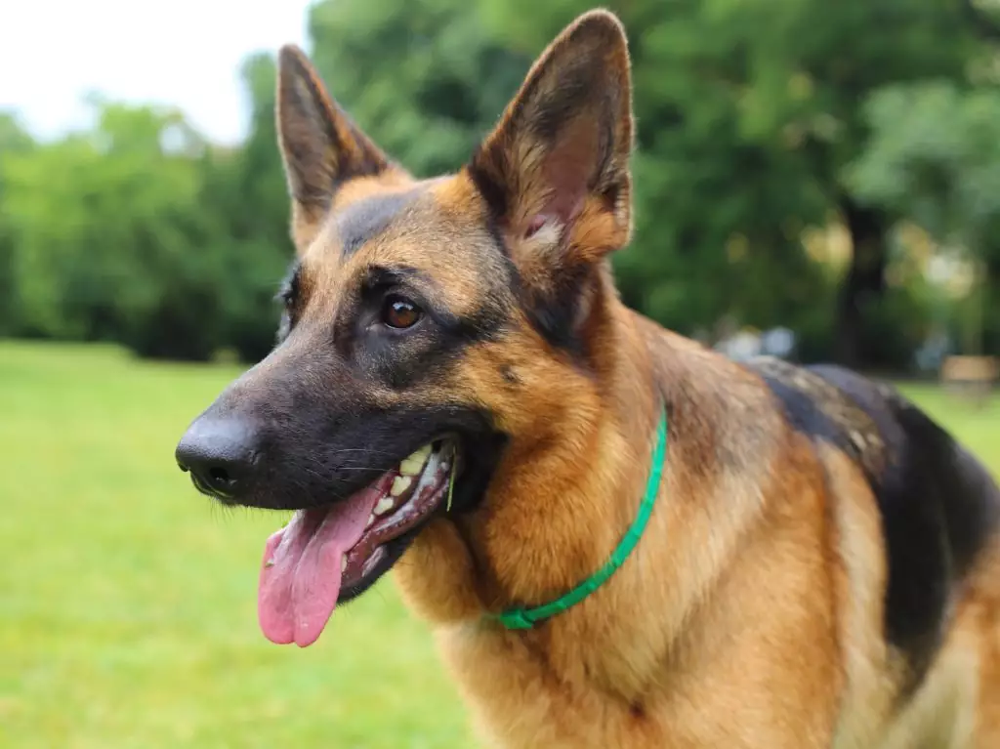
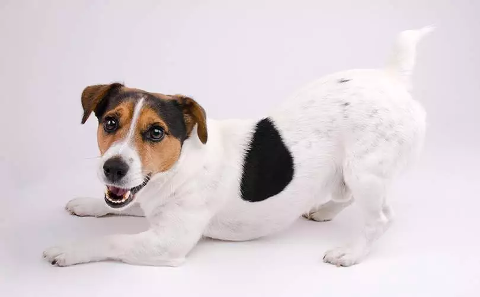
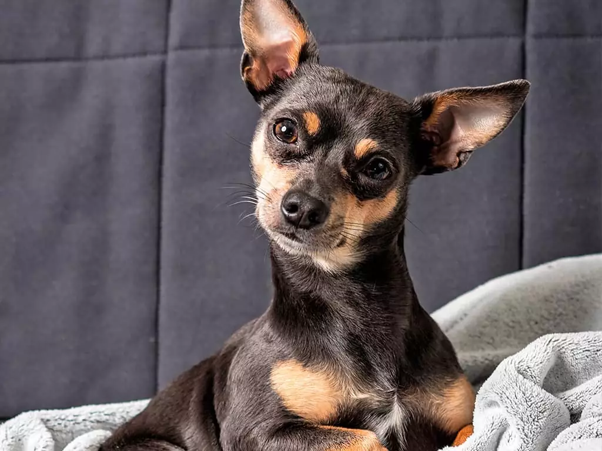
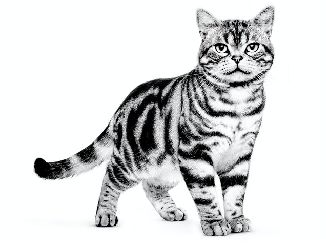
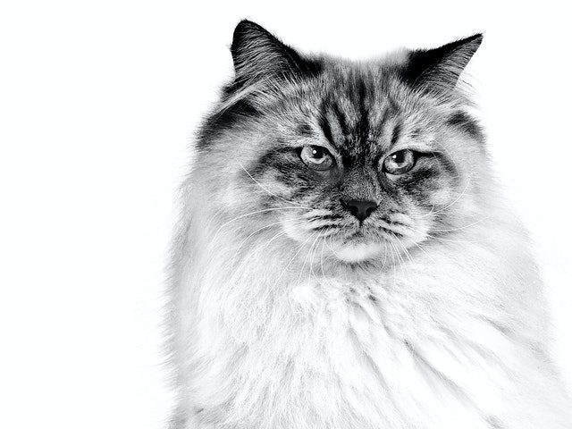
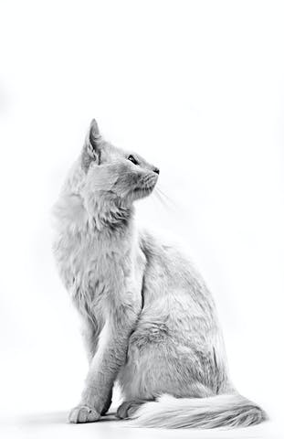
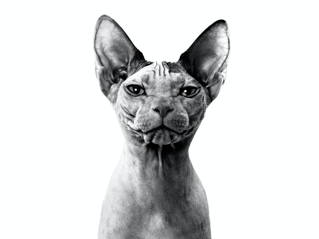

Conheça todas as raças caninas e felinas
Cachorros o amigo verdadeiro do homem !
| Raça | Caracteristica | País Origem |
|---|---|---|
| Husky Siberiano | O pelo pode apresentar uma ampla gama de cores e combinações, variando do preto até o mais puro branco. As cores padrão são branca; branca com preto; |
Rússia |
| Pastor Alemão | O pastor alemão tem uma ampla gama de cores e combinações, como preto com marcas marrom avermelhado, marrom, amarelo e cinza claro. | Alemanha |
| Fox Paulistinha | O fox paulistinha varia entre porte pequeno e médio. Ele costuma ser esbelto, mas pode ter uma tendência a engordar. Suas orelhinhas são triangulares e quase sempre ficam dobradas para a frente, dando-lhe uma aparência simpática. | Brasil |
| Pinscher | 50% ódio 49.9% tremedeira 0.1% cachorro. Esta raça foi forjada na força do ódio a milênios anos atrás. | Inglaterra |
Gatos O verdadeiro "come e dorme" ...gatos são legais
| Raça | Caracteristica | País Origem |
|---|---|---|
| American Shorthair | Brincalhão, com uma expressão doce e franca e pelagem curta e lustrosa, o gato American Shorthair reflete a aparência felina dos ancestrais de caça. | Estados Unidos |
| Neva Masquerade | A raça neva masquerade se dá bem com outros gatos, cães e crianças. Apesar de seu tamanho, são bastante ágeis e gostam de saltar alto. | Rússia |
| Angorá | Os Angorás não são apenas inteligentes, mas também extremamente adaptáveis, amorosos e brincalhões, o que os torna uma excelente opção para famílias com crianças pequenas e adoráveis acompanhantes para adultos idosos. | Turquia |
| Don Sphynx | Don Sphynxs são ativos, extremamente amistosos, altamente inteligentes e muito amorosos, leais e dedicados aos tutores. | Rússia |